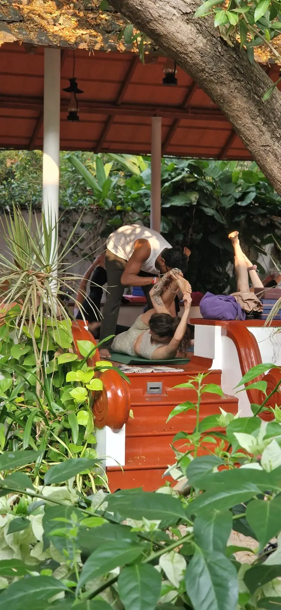
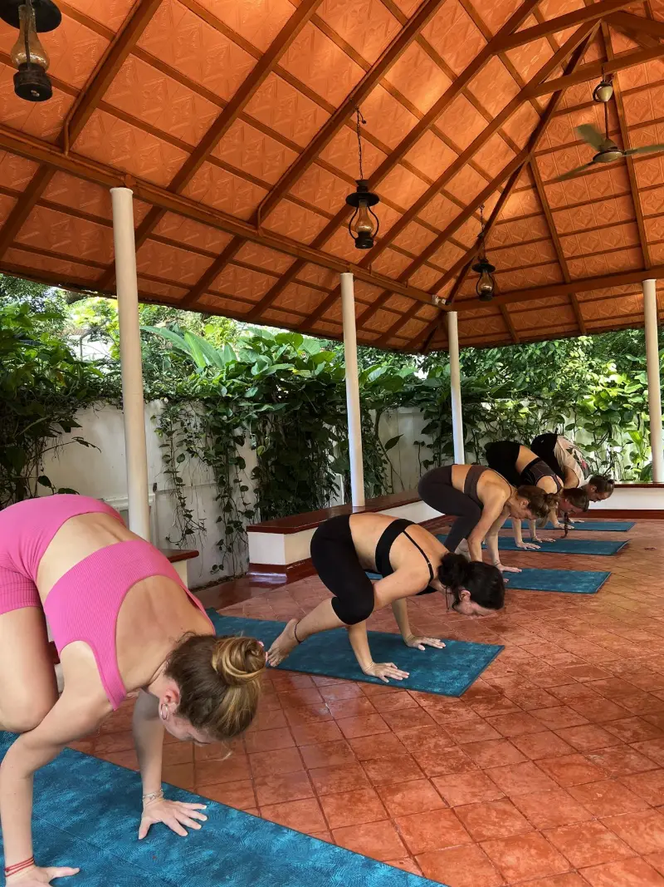

Notes from the school
Writing on practice, breath, philosophy and Kerala — from a school that has been teaching in Fort Kochi for more than fifteen years. Plain language, no mysticism, nothing we have not taught in a room.

Fort KochiKerala, India
Latest
Start with this one
If you are in Kochi now, or arriving soon, this is the piece to read first.

Fort Kochi & Kerala
Yoga in Fort Kochi: a complete guide for travellers
Class times you can rely on, what a traditional two-hour Hatha class actually involves, what to bring, the best season to come, and how to join without booking anything in advance.
By Master Aksharanand A S · · 11 min read
Yoga classes in Kochi
Before you come to class
Class times and prices, choosing a class, what it costs, what to wear, and what to expect in the room — written from Fort Kochi.
Fort Kochi & Kerala
Planning your stay
The town, the journey, and how to fit a daily practice into a Kerala trip.
Practice
On the mat
Traditional practices, explained and written out step by step.
Philosophy
Behind the practice
The ideas that give yoga its purpose, in plain English.
Teacher training
Choosing a 200-hour course
For people comparing trainings — ours included.